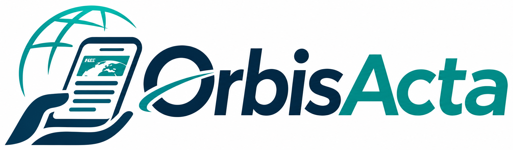

Világkép
A világ hírei, több ország nézőpontjából.
Válaszd ki az országokat és témákat. Az összefoglalókat csak a forrásanyag és a felhasználási jogok ellenőrzése után jelenítjük meg.
Országok (legfeljebb 10)
Témakör

Nemzetközi hírek · Szerkesztőségi próbarendszerVálaszd ki az országokat és témákat. Az összefoglalókat csak a forrásanyag és a felhasználási jogok ellenőrzése után jelenítjük meg.